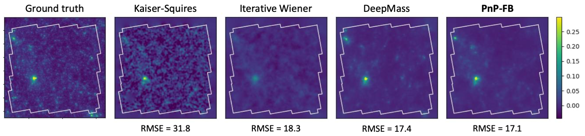
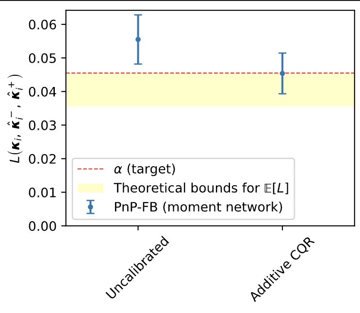
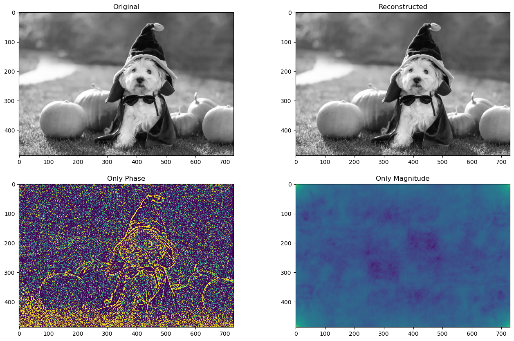
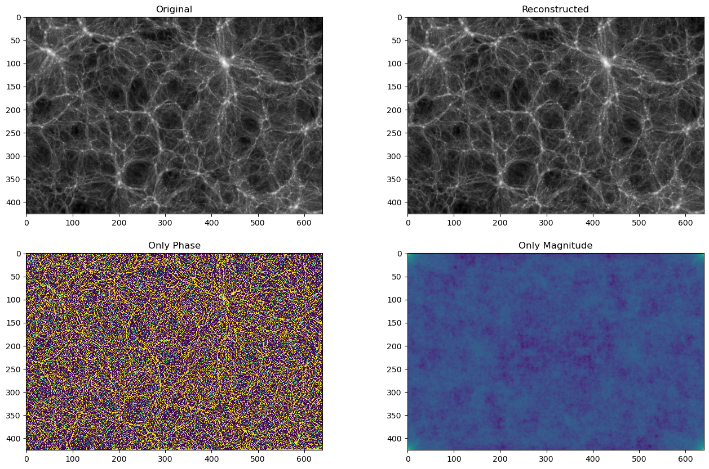
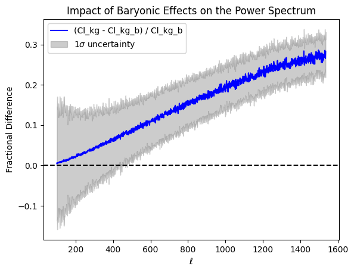
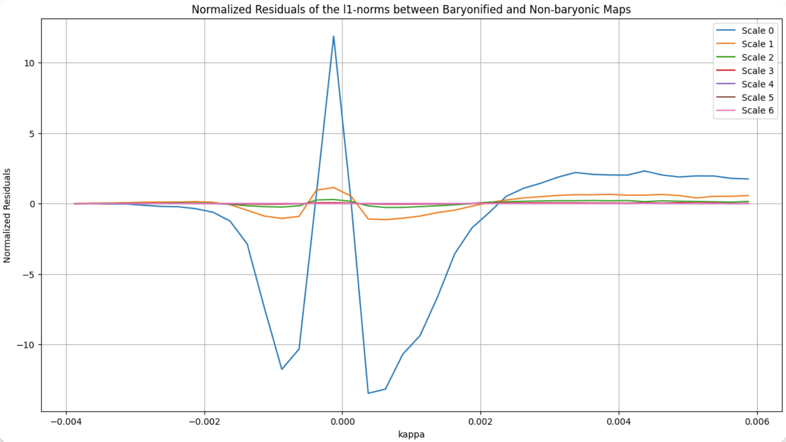
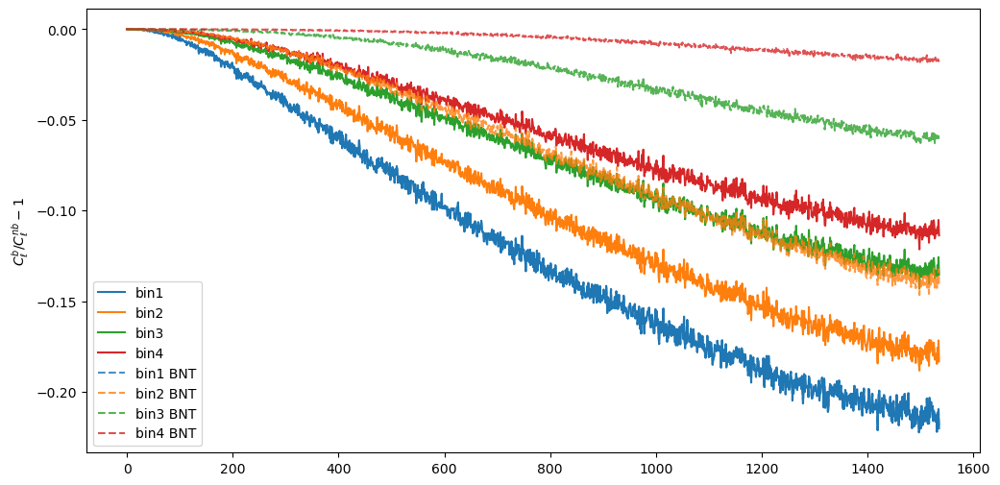
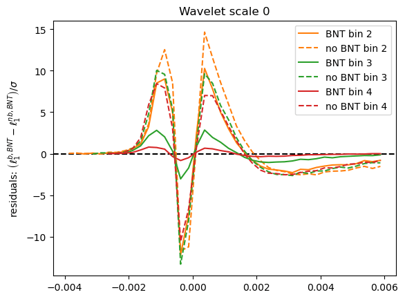
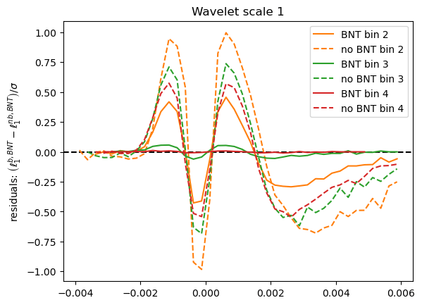
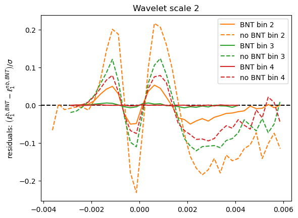

Advanced Inference in Weak Lensing: Mass Mapping and Higher-Order Statistics for Precision Cosmology
March 28th, 2025
Andreas Tersenov

Introduction - Weak Lensing
- Weak Lensing (WL): An observational technique in cosmology used to study the distribution of matter in the universe.
- Principle: Light from distant galaxies is deflected by gravitational fields, leading to subtle distortions in their observed images.
- Weak Lensing Effect: Small, coherent distortions in the shapes of background galaxies.
- WL provides a direct measurement of gravitational distortions.
- It allows us to probe cosmic structure, study dark matter, and constrain cosmological parameters.
Relation between $\kappa$ and $\gamma$
- From convergence to shear: $\,\, \gamma_i = \hat{P}_i \kappa$
- From shear to convergence: $\,\, \kappa = \hat{P}_1 \gamma_1 + \hat{P}_2 \gamma_2$
$$ \hat{P}_1(k)=\dfrac{k_1^2 - k_2^2}{k^2}, \,\,
\hat{P}_2(k)=\dfrac{2k_1k_2}{k^2} $$
Bayesian reconstruction
- Mass mapping problem → statistical inference problem
- Goal: infer most probable value of $\kappa$-field given observed shear data
- Likelihood distribution: prob. of observing $\gamma$ data given true $\kappa$ → encodes the forward process of the model → contains the physics
- Prior distribution: encodes the knowledge about the signal before observing data
- Log-likelihood (when the noise is white Gaussian) $$\log p(\gamma \mid \kappa)=-\frac{1}{2}\left(\gamma-\mathbf{F}^* \mathbf{P F} \kappa\right)^{\dagger} \Sigma_n^{-1}\left(\gamma-\mathbf{F}^* \mathbf{P F} \kappa\right)+\text { constant }$$
- Maximum A Posteriori solution $$\hat{x} = \arg \max_x \, \log p(y|x) + \log p(x)$$
Wiener filter
- Assumes prior on $\kappa$ → Gaussian random field $p_{\rm Gauss}(\kappa) = \frac{1}{\sqrt{\det 2\pi \mathbf{S}}} \exp{\left( - \frac12 \tilde{\kappa}^{\dagger} \mathbf{S}^{-1} \tilde{\kappa} \right)}$
- Likelihood (assuming uncorrelated, Gaussian noise) → also Gaussian $p(\mathbf{\gamma} | \kappa) = \frac{1}{\sqrt{2\pi\det \mathbf{N}}} \exp{\left[ -\frac12 (\mathbf{\gamma - \mathbf{A} \mathbf{\kappa}})^{\dagger} \mathbf{N}^{-1} ( \gamma - \mathbf{A} \mathbf{\kappa} ) \right]}$
- The Gaussian prior encodes the assumption that the fluctuations in the $\kappa$-field are well described by a Gaussian random field, with power spectrum given by the cosmological model
Convergence power spectrum
$$ \langle \tilde{\kappa}(\boldsymbol{k}) \tilde{\kappa}^*(\boldsymbol{k}') \rangle =
(2\pi)^2
\delta_D(\boldsymbol{k} - \boldsymbol{k}') P_{\kappa}(k) $$
Stat. measure of the spatial distribution of the convergence field → quantifies the
amplitude of the fluctuations in κ as function of their spatial scale
Wiener filter
Wiener solution of the inverse problem
$$\hat{\kappa}_{\text {wiener }}=\arg \min _\kappa\left\|\Sigma^{-1 /
2}\left(\gamma-\mathbf{F}^* \mathbf{P F} \kappa\right)\right\|_2^2+\log p_{\text {Gaussian
}}(\kappa)$$
- This solution corresponds to the maximum a posteriori (MAP) solution under the assumption of a Gaussian prior on $\kappa$, and it matches the mean of the Gaussian posterior.
Wiener reconstruction
$$\hat{\kappa}_{\text {wiener }}=\mathbf{S} \mathbf{P}^{\dagger}
\left[\mathbf{P} \mathbf{S} \mathbf{P}^{\dagger} + \mathbf{N} \right]^{-1} \tilde{\gamma}$$
Sparse recovery
- Decomposes the signal into another domain (dictionary), where it is sparse
- Implement the wavelet transform → decomposes the signal into wavelet functions (waveforms of limited duration with an average value of zero)
- Use starlet wavelets → represent well structures resembling the $\kappa$ of a DM halo (positive & isotropic)
- The application of sparsity prior enforces a cosmological model where the matter field is a combination of spherically symmetric DM halos
MCALens
- Models $\kappa$-field as a sum of a Gaussian and non-Gaussian component $$\boxed{\kappa = \underbrace{\kappa_{\rm NG}}_{\text{Standard Wiener filter approach}} + \underbrace{\kappa_\rm G}_{\text{Modified wavelet approach}}}$$ $$\min _{\kappa_G, \kappa_{N G}}\left\|\gamma-\mathbf{A}\left(\kappa_G+\kappa_{N G}\right)\right\|_{\Sigma_n}^2+C_{\mathrm{G}}\left(\kappa_G\right)+C_{\mathrm{NG}}\left(\kappa_{N G}\right) $$
- MCA (morphological Component Analysis) performs an alternating
minimization
scheme:
- Estimate $\mathbf{\kappa}_{\mathrm{G}}$ assuming $\mathbf{\kappa}_{\mathrm{NG}}$ is known: $$\min _{\kappa_G}\left\|\left(\gamma-\mathbf{A}\kappa_{N G}\right) -\mathbf{A}\kappa_{G} \right\|_{\Sigma_n}^2+C_{\mathrm{G}}\left(\kappa_G\right)$$
- Estimate $\mathbf{\kappa}_{\mathrm{NG}}$ assuming $\mathbf{\kappa}_{\mathrm{G}}$ is known: $$\min _{\kappa_{NG}}\left\|\left(\gamma-\mathbf{A}\kappa_{G}\right) -\mathbf{A}\kappa_{NG} \right\|_{\Sigma_n}^2+C_{\mathrm{NG}}\left(\kappa_{NG}\right)$$
Overview of mass mapping methods
- Wiener filter: Prior on $\kappa$ → Gaussian random field, Likelihood → Gaussian, Solution → corresponds to MAP for gaussian $\kappa$
- Sparse recovery: Prior on $\kappa$ → sparse in wavelet basis, Enforces model where matter field is a combination of DM halos
- MCALens: Models $\kappa$-field as sum of a Gaussian and a non-Gaussian component, Uses Morphological Component Analysis
- Deep Learning Methods:
- DeepMass: CNN with a U-Net-based architecture, prior from simulations
- DeepPosterior: Probabilistic mass mapping with deep generative models, Prior from 2pt statistics modelling at large scales & Deep Learning on simulations for small scales, Sampling with Annealed HMC
Mass mapping methods:
Statistics
Higher Order Statistics: Peak Counts
- Peaks: local maxima of the SNR field $\nu = \dfrac{\left(\mathcal{W} \ast \kappa \right)(\theta_{\rm ker})}{\sigma_n^{\rm filt}}$
- Peaks trace regions where the value of $\kappa$ is high → they are associated to massive structures
Peak funtions
- The peak function is the number of peaks in a map as a function of the SNR $\nu$
Wavelet peaks
- We consider a multi-scale analysis compared to a single-scale analysis
- Apply (instead of Gaussian filter) a starlet transform → allows us to represent an image $I$ as a sum of wavelet coefficient images and a coarse resolution image
- Allows for the simultaneous processing of data at different scales → efficiency
- Each wavelet band covers a different frequency range, which leads to an almost diagonal peak count covariance matrix
Wavelet peak funtions
What happens if we consider all pixels instead of selecting multi-scale minima and maxima?
Inference
Inference with HOS
- Use $\texttt{cosmoSLICS}$ simulations: suite designed for the analysis of WL data beyond the standard 2pt cosmic shear
- $\texttt{cosmoSLICS}$ cover a wide parameter space in $\left[ \Omega_m, \sigma_8, w_0, h \right]$.
- For Bayesian inference → use a Gaussian likelihood for a cosmology independent covariance, and a flat prior.
- To have a prediction of each HOS given a new set of parameters→ employ an interpolation with Gaussian Process Regressor (GPR)
From data to contours
- $\mu$: expected theoretical prediction, $d$: data array (mean over realizations of a HOS), $C$: covariance matrix
The (standard) mono-scale peak counts
\[
\begin{array}{lcccc}
\hline \hline
\text{FoM} & \text{KS} & \text{iKS} & \text{MCALens} \\
\hline \hline
\left(\Omega_m, h\right) & 476 & 453 & 450 \\
\left(\Omega_m, w_0\right) & 152 & 141 & 233 \\
\left(\Omega_m, \sigma_8\right) & 1323 & 1285 & 1740 \\
\left(h, w_0\right) & 55 & 63 & 87 \\
\left(h, \sigma_8\right) & 336 & 292 & 293 \\
\left(w_0, \sigma_8\right) & 75 & 72 & 124 \\
\hline
\left(\Omega_m, h, w_0, \sigma_8\right) & 492 & 444 & 578 \\
\hline
\end{array}
\]
Wavelet multi-scale peak counts
\[
\begin{array}{lcccc}
\hline \hline
\text{FoM} & \text{KS} & \text{iKS} & \text{MCALens} \\
\hline \hline
\left(\Omega_m, h\right) & 670 & 702 & 2159 \\
\left(\Omega_m, w_0\right) & 247 & 244 & 1051 \\
\left(\Omega_m, \sigma_8\right) & 2414 & 2517 & 9039 \\
\left(h, w_0\right) & 82 & 80 & 259 \\
\left(h, \sigma_8\right) & 411 & 433 & 1335 \\
\left(w_0, \sigma_8\right) & 131 & 129 & 577 \\
\hline
\left(\Omega_m, h, w_0, \sigma_8\right) & 758 & 755 & 1947 \\
\hline
\end{array}
\]
Where does this improvement come from?
Conclusions
- Investigated how different mass mapping algorithms affect cosmological inference using HOS from WL data.
- Estimated posterior distributions of $\Omega_\mathrm{m}$, $\sigma_8$, $h$, and $w_0$ using peak counts and wavelet peak counts.
Results
- MCALens Advantage:
- $\sim 17\%$ improvement in (FoM) over KS.
- $\sim 157\%$ improvement in FoM over KS.
- KS vs. iKS: No significant difference in constraints → inpainting does not improve performance
- Wavelet Peak Counts: Provide tighter constraints than single-scale peak counts.
- MCALens and Multi-Scale Approach: Captures more small-scale information, leading to the greatest improvement.
Takeaway
- Careful Selection Matters: Choosing an advanced mass mapping method significantly enhances constraints on cosmological parameters from HOS.
Alternative DL-based mass mapping method
A PnP approach with conformal predictions for mass mapping
- Novel DL-based method for mass mapping
- Combines model driven and data driven approaches → uses a Forward-Backward splitting algorithm with an on-the-shelf DL denoiser
- Efficient and flexible reconstruction, while incorporating knowledge about the physics
- Fast at inference
- Doesn't require retraining a full model for every galaxy survey
- Provide robust distribution-free UQ without relying on sampling, and not assuming any prior on $\kappa$
A PnP approach with conformal predictions for mass mapping


- Use a UNet or SUNet as a denoiser
- Performs on par with state of the art DL methods (and sometimes better)
- Is faster, more robust and doesn't require retraining
- Incorporates distribution-free UQ through moment networks and CQR $$ \left\| G_\Omega (\gamma) - \left( \kappa - F_{\hat{\Theta}} (\gamma) \right)^2 \right\|_2^2$$
2 point statistics is not sufficient
The PS shows power as the mean squared amplitude at each frequency line but includes no phase information.
2 point statistics is not sufficient
The PS shows power as the mean squared amplitude at each frequency line but includes no phase information.
Starlet $\ell_1$-norm
- New higher order summary statistic for weak lensing observables
- Provides a fast multi-scale calculation of the full void and peak distribution
- $\ell_1$-norm = sum of absolute values of the starlet decomposition coefficients of a weak lensing map
- Information encoded in all pixels (automatically includes peaks and voids)
- Multi-scale approach
- Avoids the problem of defining peaks and voids
- Theoretical prediction from LDT
Theory prediction for starlet $\ell_1$-norm
Sreekanth, V. T., Codis, S., Barthelemy, A., & Starck, J.-L. 2024, A&A, 691,A80
Is there an alternative to using N-body simulations?
Why Simulations are needed?
- Cannot model the systematics in theory directly
- Systematic effects can be directly incorporated in simulations
- Combination of multiple probes
- Helps in understanding the relation between theory and observation
Simulation Challenges
- Multiple realizations required
- High computational cost
- Resource intensive
Alternative: Emulation
- Approximate methods or NN based methods to predict simulation outputs
- Fast and efficient
- Cost-effective
- They might not always have correct HOS incorporated!
Build an emulator using generalised forward backward method
Initial Map
➡️
Apply $\ell_1$ norm constraint
➡️
Apply Cls constraint
Modified map with correct l1
Modified map with correct Cls
➡️
Average over the two
Emulated map
Emulated $\kappa$-fields
Assessing Baryonic Feedback in WL


Noiseless case
Realistic case (noise and masks)
After BNT



